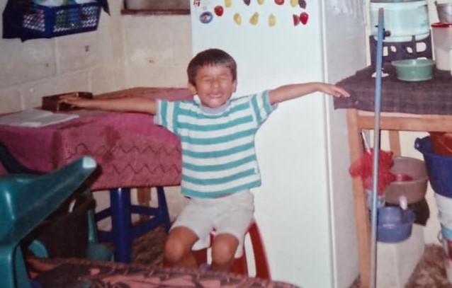
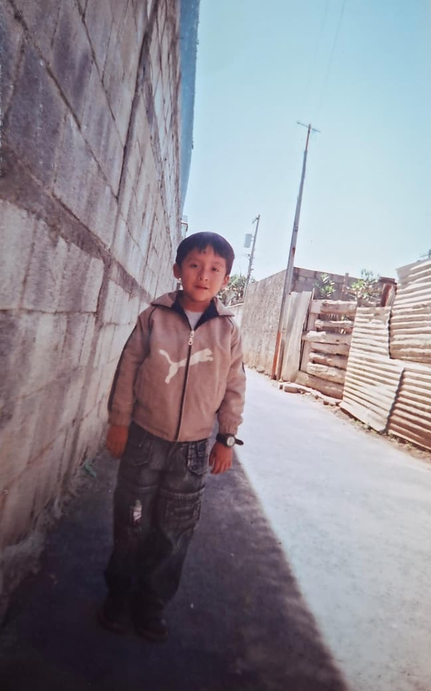

Actualmente yo tengo 22 años, naci el 24 de agosto del 2003 en un municipio de Alta Verapaz, llamado Santa Cruz Verapaz, ahora trabajo como Piloto en una empresa de reciclaje, pero no todo fue facil...
No todas las cosas salieron bien anteriormente, siempre se pasan dificultades, pero gracias a Dios todo ha salido bien , yo de pequeño me mude a la ciudad capital, tengo un par de familiares por parte de mi mama aqui en la capital, ademas de que las oportunidades para tener una mejor educacion se consiguen aqui, estudie mi preprimaria aqui y a finales del año 2010 me mude para Santa Cruz Verapaz, ahi vivi desde del 2011 hasta el 2023, siendo ahi las mejores navidades que uno como niño pudo pasar, en general es un municipio muy tranquilo, aunque las oportunidades para salir adelante, son cosas que en ocasiones lo desmotivan a uno

En el 2023 se me presento la oportunidad laboral la cual no podia rechazar, aunque esta misma representaba salir de mi zona de confort y dejar mi casa para mudarme a la Ciudad Capital, esto siendo en agosto , a 4 dias de mi cumpleaños, la vida para mi dio un cambio drastrico, si bien representaba mejorar en todos los aspectos , el dejar la casa de un dia para otro, fue algo que no lo vizualice como tendria que ser, pero antes de todo esto, yo trabajaba en un "Internet" si bien era un trabajo el cual no representaba mayor dificultad, no era un trabajo muy bien remunerado , justamente un domingo recibo una llamada indicandome que la oportunidad que esperaba , estaba disponible , aunque el dia para presentarme era ese lunes, osea al proximo dia, sin pensarlo tome la decision de renunciar y aceptarla y sin planes y demas me fui en busca de crecimiento.

Actualmente sigo en el mismo lugar, siendo en agosto ya 3 años de estar en esta empresa, gracias a Dios todo ha salido medianamente bien. Haciendo un adelanto, yo sali de 5to Bachillerato en 2021, desde ahi tome el "camino laboral" dejando en pausa la continuacion de mis estudios, en diferentes años eh trabado en atencion al cliente, como en tiendas de abarrotes, entregas de productos de uso diario, y siendo las ultimas en, el intenet y que tambien era una libreria pequeña, y ya este trabajo mucho mas formal que es el ser piloto, no me arrepiento porque de todo eh ganado experiencia y que gracias a Dios me ha servido todo lo aprendido
Mi meta personal siempre ha sido ser un persona profesional, ser el ingeniero que deseo ser y poder devolverles a mis padres todo lo que ellos hicieron por mi